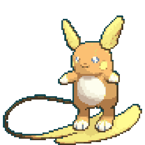

-
Bubasaur #001

- Grama
- Veneno
Há um sementa de planta em suas costas desde o dia em que este pokémon nasce. A semente cresce lentamente.
-
Ivysaur #002

- Grama
- Veneno
A luz solar fará a flor em suas costas crescer. Conforme Ivysaur for crescendo, essa flor irá desabrochar. Ela irá soltar um doce aroma quando florescer.
-
Venusaur #003

- Grama
- Veneno
Mostram ser bastante tímidos, já que este Pokémon é raramente encontrado na natureza e também pode ser visto e pastagens.
-
Charmander #004

- Fogo
Obviamente prefere lugares quentes. Quando chove, diz-se que o vapor sai da ponta da cauda.
-
Charmeleon #005

- Fogo
Quando balança a cauda em chamas, eleva a temperatura a níveis insuportavelmente altos.
-
Charizard #006

- Fogo
- Voador
Cospe fogo quente o suficiente para derreter pedras. Conhecido por causar incêndios florestais involuntariamente.
-
squirtle #007

- Água
Após o nascimento, suas costas incha e endurece formando uma concha. Pulveriza espuma poderosamente pela boca.
-
Wartotle #008

- Água
Frequentemente se esconde na água para perseguir presas incautas. Para nadar rápido, ele move as orelhas para manter o equilíbrio.
-
Blastoise #009

- Água
Um POKéMON brutal com jatos de água pressurizada em sua concha. Eles são usados para tackles de alta velocidade.
-
Pichu #010

- Elétrico
Ainda não tem habilidade para armazenar eletricidade. Pode causar um choque se estiver divertido ou assustado.
-
Pikachu #011

- Elétrico
Quando está irritado, descarrega imediatamente a energia armazenada nas bolsas em suas bochechas.
-
Raichu #012

- Elétrico
Sua longa cauda serve como aterramento para se proteger de sua própria energia de alta tensão. Para evoluir o pikachu para Raichu use a Thunder Stone, Fora de Alola
-
Raichu Alola #013
- Elétrico
- Psíquico
Este pokémon exala uma carga elétrica fraca por todo o seu corpo que o faz adquirir um leve brilho na escuridão. raichu busca eletricidade plantando o rabo no chão. Para evoluir o pikachu para Raichu use a Thunder Stone, em Alola